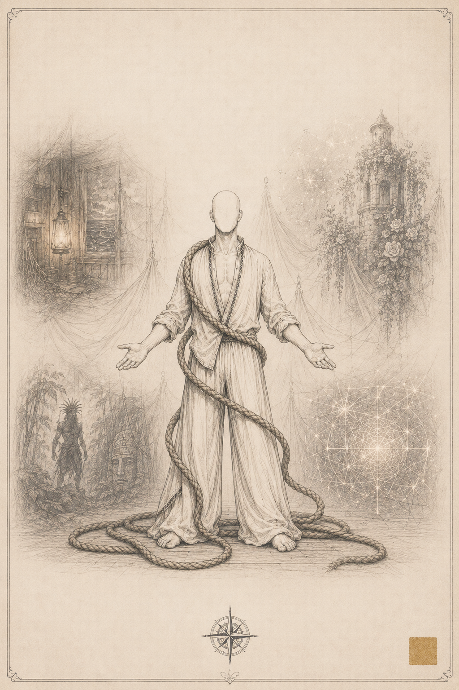
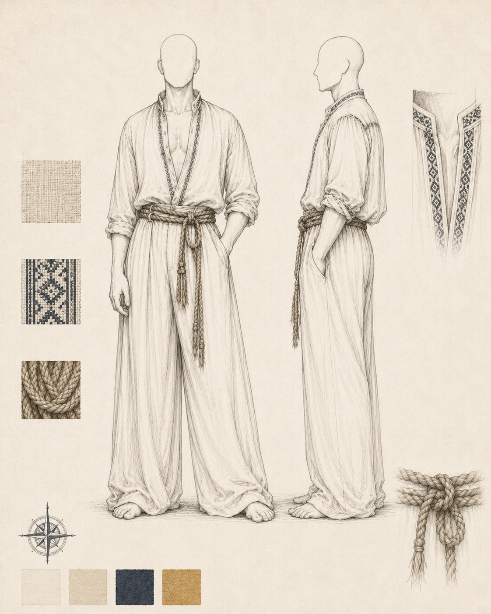
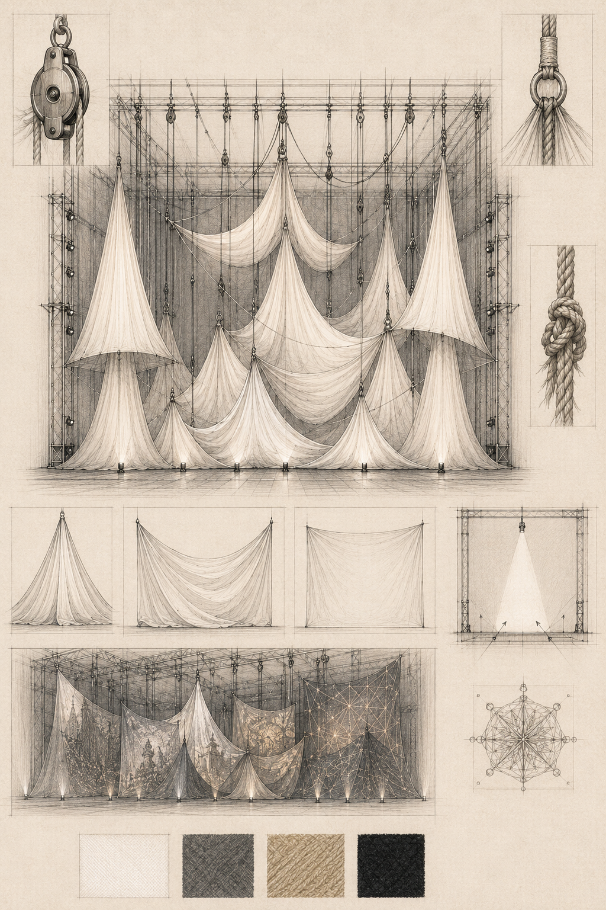
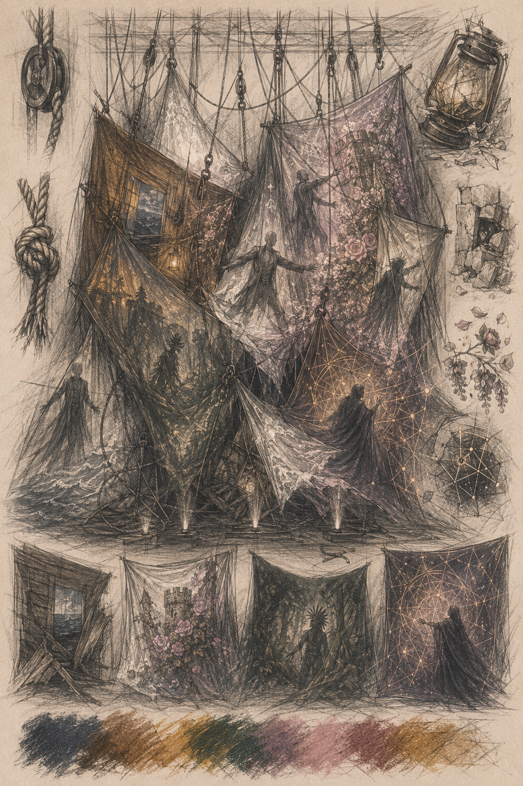
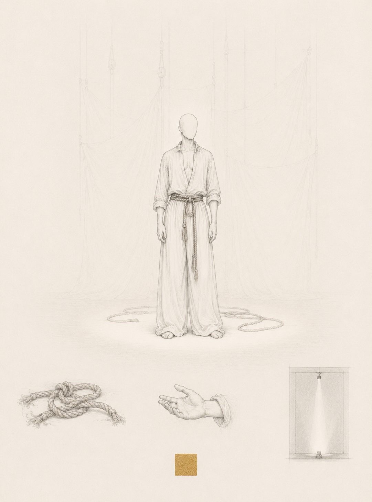
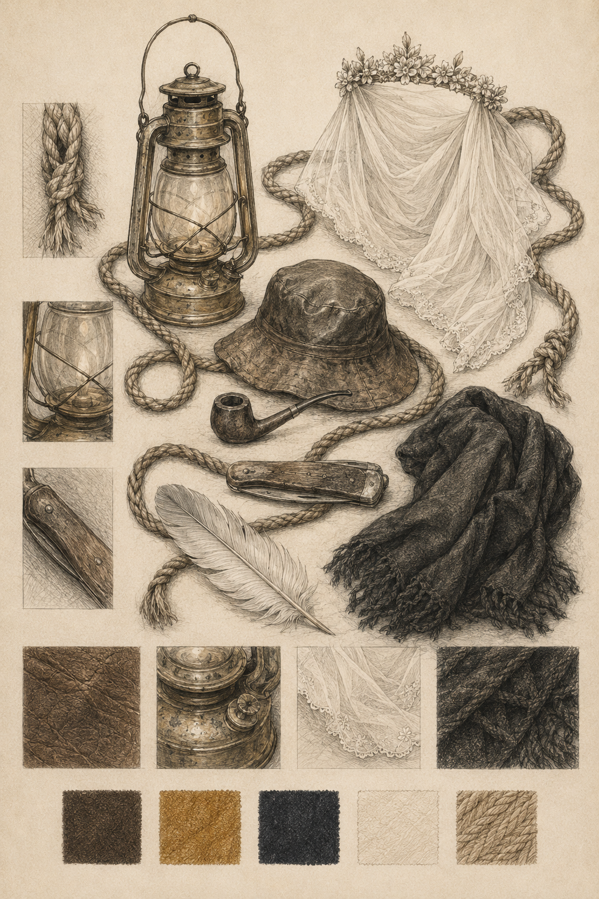
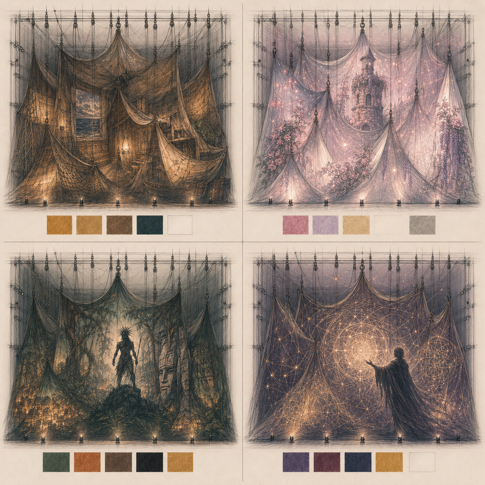

Roteiro + Memorial de Direção de Arte

Todas as Histórias do Mundo é um espetáculo solo de circo contemporâneo — 50 minutos de monólogo em que contação de histórias, técnicas circenses e videoprojeção mapeada formam uma narrativa única. Filipe Duque está em cena do início ao fim, habitando múltiplos personagens pelo mesmo corpo: troca de adereço, mudança de postura, de voz.
A ideia-força: Um menino que conhece todas as histórias do mundo descobre, ao final da jornada, que existe uma história que nunca foi contada para ele — a única que ninguém mais poderia conhecer. É a história da sua própria vida.
A estrutura segue a jornada do herói em três atos e doze cenas. Ao longo do caminho, Sael encontra cinco personagens cujas histórias vêm de tradições diversas: contos de fadas europeus, folclore brasileiro, narrativas Romani, mitos indígenas brasileiros e mitos de criação do mundo.
Sael cresceu à beira do mar, numa cabana de madeira que cheirava a sal e a história. Seu avô, um pescador que havia navegado os sete mares, tinha um dom raro: conhecia histórias de todos os contos do mundo. Noite após noite, antes de apagar a lamparina, o velho sentava na beirada da cama e contava histórias de desertos e neves, de princesas e dragões, de guerreiros e feiticeiras, de crianças que cruzavam florestas e de velhos que ensinavam montanhas a falar.
Os anos passaram. Sael cresceu dentro dessas histórias. E uma noite, quando pediu ao avô uma nova, o velho ficou em silêncio. Pela primeira vez na vida, não havia mais nenhuma. Sael já as conhecia todas.
Inquieto, o menino decide partir. Se não há mais histórias no mundo do avô, ele vai buscá-las no mundo grande. Mas a jornada revela um problema: a cada pessoa que encontra, a cada história que ouve, Sael já conhece o final. O dom do avô tornou-se uma espécie de maldição — ele é o menino que sabe todos os fins, mas que não consegue mais ser surpreendido.
Em sua jornada, Sael encontra cinco personagens. Uma donzela que busca liberdade — ela aceita que o menino saiba seu destino, e Sael se pergunta por que a certeza traz paz aos outros e inquietação a ele. Um companheiro trapaceiro e alegre, cujas histórias absurdas fazem Sael rir, e por um momento ele esquece de saber demais. Um guerreiro que não aceita que o menino conheça seu fim — e é o primeiro a lançar o desafio: "Se você conhece todas as histórias, qual é a sua?" Uma feiticeira que vê além do dom: "Você carrega todas as histórias do mundo e se perdeu dentro delas. Não sabe mais se é o narrador ou a história." E por fim, um ancião que começa a contar uma história que Sael não conhece. Pela primeira vez, o menino não consegue dizer o final. O ancião sorri: "Esta história ainda está acontecendo. É a única que você nunca soube. É a sua."
A revelação chega como uma onda: cada passo da jornada, cada pessoa encontrada, cada história ouvida, eram fragmentos de uma narrativa que estava sendo escrita enquanto ele vivia. Sael não retorna para casa. Vai adiante — mas agora com uma história para contar: a sua.

Sael — nome inventado que soa como se sempre tivesse existido. A raiz sa- ecoa o sal — o mar, a memória, a origem. O sufixo -el vem do hebraico sha'al: perguntar, buscar. O menino que nasceu do mar e que parte em busca do que não sabe que não sabe.
Sael cresceu num mundo pequeno: uma cabana, o avô, o mar. O horizonte era o limite do que conhecia de concreto — mas não do que conhecia de histórias. Cresceu curioso mas isolado, mais confortável na companhia de personagens do que de pessoas reais. O dom que herdou do avô — conhecer o fim de toda história — virou o modo como se relaciona com o mundo: Sael observa, posiciona, analisa. Raramente se deixa surpreender. O dom que o protegia do espanto vai, aos poucos, começar a pesá-lo.
Quando parte, não é por coragem. É por inquietação — a sensação de que algo falta, sem conseguir nomear o quê. Ele não é o herói clássico que sabe para onde vai. É um menino que saiu porque ficar ficou impossível.
A jornada vai fazê-lo descobrir que saber o fim de uma história e entender o que ela significa são coisas completamente diferentes.
Todos os personagens emergem do mesmo corpo — através de trocas mínimas de adereço, mudanças de postura e qualidade de voz. A inspiração é a Commedia dell'Arte: um único elemento exagerado basta para instaurar outro ser em cena.
A corda é o objeto central de Sael — entregue pelo avô, ela muda de função a cada cena. Linha de pesca, corda de trapézio, fio do destino, arma, objeto de ilusionismo, peso. O fio que conecta todas as histórias.

O cenário é feito de tecidos brancos suspensos por cordas e polias, formando volumes tridimensionais que um único operador manipula ao vivo. Os tecidos se transformam durante o espetáculo: criam uma cabana, uma vela de barco, as ondas do mar, uma floresta, uma caverna, um palco vazio.
A videoprojeção mapeada não opera como ilustração — é dramaturgia visual. Cada universo que Sael atravessa tem uma identidade visual própria projetada sobre os tecidos. Quando o espaço muda, o mundo inteiro muda. Não há troca de cenário. Há transformação.
O operador de vídeo, em console, dispara as transições em tempo real — em diálogo constante com o operador que move as cordas e polias. Quando o tecido se move, a projeção se deforma, ondula, racha. Esse comportamento não é falha técnica. É a linguagem do espetáculo.
O teatro de sombras integra-se à videoprojeção de forma orgânica. Não apenas o corpo do artista projeta sombra sobre os tecidos iluminados — objetos manipulados em cena (a corda, os adereços, bastões) também produzem sombras sobre as superfícies. A sombra do corpo e a sombra do objeto se combinam: uma narrativa paralela que conta o que a voz ainda não disse.
O espetáculo mobiliza o repertório completo de Filipe Duque, construído ao longo de 20 anos de carreira — 12 deles na Companhia Circênicos. As técnicas não são números isolados — estão a serviço da narrativa.
O artista está em cena do início ao fim. Os personagens emergem do mesmo corpo — troca de adereço, mudança de postura, de voz, de qualidade de movimento. Não há coadjuvantes. Há um ator que contém multidões.
A projeção, a luz e o espaço são elementos dramáticos — não decoração.
Prólogo|
Narrativa
O palco emerge do escuro. Um espaço quente. Uma cabana à beira do mar. Os tecidos formam paredes e teto — o espaço ainda pequeno, apertado, como o mundo de uma criança que ainda não sabe que o mundo é grande. Sael entra com o lampião aceso nas mãos. Senta. Olha o lampião. Começa a falar. "Meu avô sabia todas as histórias do mundo." Pausa. O som das ondas. "Isso não é exagero. Ele era pescador, e tinha navegado os sete mares. Em cada porto, em cada costa, em cada praia onde o barco encostou — ele trocou histórias por peixe, histórias por abrigo, histórias por companhia. Guardou cada uma delas dentro de um lugar que eu nunca descobri onde fica." Sael narra o avô, narra a si mesmo menino, narra histórias dentro de histórias. Quando o avô emerge, a coluna curva, os movimentos ficam mais lentos. "Toda noite, antes de apagar a lamparina, ele sentava na beirada da minha cama. E eu sabia: enquanto a luz estivesse acesa, a noite não terminava. Enquanto ele falasse, eu era invencível." Técnica circense: Contação de história + manipulação suave dos tecidos como extensão da narração. |
Direção de Arte
Videoprojeção: Interior de cabana de madeira — paredes ásperas, teto baixo, a luz da lamparina tremulando. O mar escuro com estrelas refletidas. Ondas lentas, rítmicas, quase adormecidas. Paleta: Âmbar Luz: Mínima. A lamparina é a fonte dramática de luz. Adereço: Lampião aceso. |
|
Narrativa
Sael cresceu. O corpo tem outra escala no espaço. A lamparina ainda queima. Mas algo mudou. O avô — evocado pela voz de Sael, por um gesto que inclina levemente o corpo — não responde de imediato. Há um silêncio que Sael nunca havia ouvido antes. Não o silêncio antes de a história começar. O silêncio de quem procura e não encontra. "Avô. Me conta uma história." — "Avô." — "Eu sei, Sael." — "Qual é? Conta essa." Outro silêncio. "Eu... não tenho mais nenhuma." O silêncio não é vazio — é cheio de tudo que já foi dito. Técnica circense: Teatro físico — o corpo traduz a hesitação, o peso, a inquietação antes da decisão. |
Direção de Arte
Videoprojeção: A mesma cabana, mas a lamparina começa a fraquejar. O mar do lado de fora imobiliza-se — as ondas param. O âmbar recua, um azul-índigo muito suave começa a entrar pelas bordas dos tecidos. Paleta: Transição — âmbar perdendo força, azul-índigo entrando nas bordas. Luz: A lamparina vacila visivelmente. Adereço: Lampião aceso. |
|
Narrativa
O avô se levanta. Vai até um canto da cabana que Sael nunca explorou — o lugar escuro onde as redes ficavam, onde o cheiro do mar era mais forte. Traz de lá um pequeno saco de tecido, amarrado com um nó marineiro, surrado de tanto tempo guardado. "Isso era do meu pai. Que era do pai do pai dele. Eu nunca soube de quem era antes." Entrega a Sael. Sael segura sem abrir. "O que tem aqui dentro?" — "Uma corda." — "Uma corda." — "Uma corda simples. Comprida. Velha." Silêncio. "E por que você está me dando uma corda?" O avô sorri — como quem sabe mais do que diz. "Há uma história que eu nunca te contei. Porque ela ainda não aconteceu." Sael abre o saco. Mágica e ilusionismo: a corda aparece de dentro do tecido de forma inesperada — maior do que o saco poderia conter, ela se estende, se desenrola, desce e pousa no chão. Comprida. Simples. Surrada de tanto uso. Sael passa a corda na cintura, amarrando-a como cinto. O lampião é pousado. A cabana começa a se dissolver. Técnica circense: Contação de história + mágica e ilusionismo no momento da entrega. |
Direção de Arte
Videoprojeção: A lamparina acende forte uma última vez — um pulso de luz quente que toma todos os tecidos. A corda aparece iluminada. Depois, as paredes da cabana começam a se dissolver. O lar some. O horizonte do mar surge nas laterais. Paleta: Âmbar intenso no pulso da lamparina → transição suave para o azul do horizonte. Luz: Pulso quente → corte para o azul do mar. Adereço: A corda é retirada do saco e passada na cintura — agora é seu cinto. O lampião é pousado. |
|
Narrativa
O espaço se transforma completamente. Os tecidos se erguem, a cabana some, o horizonte se expande — o mar entra pelo palco. Pela primeira vez, o espaço é grande demais. Sael olha para cima. Uma corda pende do urdimento — o trapézio esperando. Sael segura a corda do cinto. Olha para trás uma vez — o lugar onde a cabana estava, agora vazio, agora azul. Depois olha para frente. O corpo sobe. Sael no trapézio, suspenso entre dois mundos. O risco da travessia é real. O mar lá embaixo — imenso, aberto. Técnica circense: Trapézio — a travessia é literal; o corpo sobe, atravessa, suspende-se entre dois mundos. |
Direção de Arte
Videoprojeção: O mar se abre. Os tecidos que sobem revelam o horizonte expandido — azul-profundo, a luz do amanhecer no canto. Quando Sael sobe, a projeção mostra o ponto de vista do alto — o mar embaixo, o céu acima. Paleta: Azul-índigo Luz: Corte limpo do quente para o azul. Luz de amanhecer — nem dia nem noite. Adereço: Corda no cinto. |
Em cada encontro: Sael encontra o personagem → o personagem conta sua história → Sael já sabe o final → o personagem reage. O artista interpreta os cinco personagens através de transformações de adereço e corporalidade, sem sair de cena.
|
Narrativa
Sael encontra Elara. O véu branco fino. A tiara de flores. Os ombros se abrem, o pescoço alonga, os movimentos ficam leves. Ela conta sua história com a voz de quem conta uma história que todos já ouviram. A torre de vidro, o feiticeiro, o cavaleiro. Os detalhes se encaixam como peças de um quebra-cabeça tão velho que todos sabem onde vão. Sael escuta. E antes que consiga se conter: "O cavaleiro tinha olhos da cor do mar." — "Tinha." — "E quando ele chegou à torre, o feiticeiro estava dormindo." — "Estava." — "E você saiu pela janela. Sem fazer barulho. Descalça." Elara para. Olha para ele. Depois sorri — mais sábio do que Sael esperava. "Você sabe que ele me salvou. Mas você sabe o que o feiticeiro me ensinava todas as noites, enquanto eu estava presa? A linguagem das estrelas. Cada constelação tinha um nome, e cada nome tinha uma história. Eram histórias que só existiam em cima da torre, naquele ângulo específico de céu." As flores projetadas começam a aparecer nos tecidos. "Quando o cavaleiro me libertou, eu tive que deixar a torre para trás. E com ela, tudo que eu sabia." Arquétipo: Anima / Alma — o desejo, a busca interior. Tradição: Conto de fadas europeu. Técnica: Teatro físico + mímica. |
Direção de Arte
Videoprojeção: Uma torre de vidro europeia — paredes de pedra cobertas de flores, jardins suspensos. Quando Elara fala das estrelas, as paredes se dissolvem e constelações aparecem com nomes em letras finas. Paleta: Rosa-pálido Luz: Suave, difusa — como luz que entra por vidro. Adereço: Véu branco fino + tiara de flores. |
|
Narrativa
A risada chega antes. O chapéu de couro surrado. O cachimbo. Ombros caem, quadris avançam, pés mais largos no chão. Pedro Malasartes. "Você aí, com essa cara de quem sabe demais e ri de menos — me conta uma coisa." — "Que coisa?" — "Você conhece a história da minha panela?" Sael conhece. Toda criança do Brasil conhece. Mas Pedro não espera confirmação — já está no meio da história. O diabolô entra em cena — manipulado enquanto a história avança. A panela ganha vida no malabarismo; o fazendeiro gordo aparece em silhueta nos tecidos. A história se constrói no ritmo de quem sabe onde vai mas faz questão de tomar o caminho mais longo. "...disse ao fazendeiro que a panela cozinhava sozinha. Que só precisava sair de casa por três horas e não olhar para dentro. Ele saiu. Eu entrei. Comi o frango que estava na cozinha, peguei o que tinha de pegar, e saí." "E quando ele voltou a panela estava fria." Pedro para. Olha para Sael. Uma pausa de comédia perfeita. "Você sabe como termina?" — "Sei." — "Ótimo." Sorriso largo. "Me conta de novo que dessa vez eu ouço com atenção." É o único momento em que o dom de Sael vira motivo de gargalhada. Arquétipo: Trickster / Aliado — o que alivia, o humor como inteligência. Tradição: Folclore brasileiro. Técnica: Malabarismo com diabolô + mágica e ilusionismo. |
Direção de Arte
Videoprojeção: O sertão e a mata brasileira tomam os tecidos. Quando Pedro conta a história da panela, uma fazenda aparece em silhueta cômica — o fazendeiro esperando, a panela fria. Animação simples, quase como xilogravura de cordel. Paleta: Verde-mata Luz: Diurna, aberta, alegre. Sem sombras. Adereço: Chapéu de couro surrado + cachimbo. A navalha surge do nada — aparece entre os dedos, multiplica-se, desaparece. |
|
Narrativa
O riso acaba. Os tecidos escurecem, a floresta fecha. A pena no cabelo. A pintura facial em ocre e preto. Moacir — os pés no chão como raízes, os ombros quadrados, o olhar horizontal e seco. "Me sento aqui toda noite." A voz é baixa, densa. "Na entrada da aldeia. Onde a floresta começa." Sael ouve. Reconhece o começo. "Uma noite, há muitos anos, eu estava aqui quando ouvi. O inimigo na floresta. Passos errados, passos de quem não conhece esse chão." "Você ficou." Sael diz, quase sem querer. Moacir para. Olha para Sael com um olhar que não é de admiração. "Fica quieto." — "Mas eu sei o que aconteceu —" — "Fica quieto." Silêncio. A floresta nos tecidos. O vento. "Eu tinha duas escolhas. Despertar a aldeia — eles escapariam, mas o inimigo veria, e haveria guerra. Ou segurar o inimigo sozinho, o tempo que precisasse, para que todos escapassem sem saber do perigo. Eu fiquei. Segurei o inimigo sozinho. E o grande espírito — vendo a honra do meu ato — transformou meu corpo em pedra naquela entrada. Para que minha vigília durasse para sempre." Moacir vira para Sael. A raiva no olhar é real. "Se você sabe todos os fins — me diz: valeu a pena?" Sael abre a boca. Fecha. "Se você conhece todas as histórias... qual é a sua?" E petrifica. A projeção mostra a sombra de Moacir tornando-se rocha. A aldeia escapa ao fundo. O guerreiro fica — para sempre. Arquétipo: Guardião do Limiar — o que desafia, o que testa. Tradição: Mito indígena brasileiro. Técnica: Teatro físico + acrobacia. A cena de maior intensidade corporal do Ato II. |
Direção de Arte
Videoprojeção: Noite densa. Floresta escura e fechada nos tecidos. Ao fundo, a luz distante da aldeia. Quando Moacir petrifica, a projeção mostra sua sombra tornando-se rocha — permanente, guardiã. Paleta: Ocre-escuro Luz: Mínima, dura. Uma única fonte lateral — como luar coado pela floresta. Adereço: Pena no cabelo + pintura facial ocre e preto. |
|
Narrativa
Ela já está lá. Sentada, os fios nas mãos, os olhos em algum lugar que não é este mundo. O xale escuro nos ombros. Ísola — e ela não conta para Sael. Conta como se estivesse contando para si mesma. "Minha avó sabia ler os fios." Os dedos percorrem os fios que ela segura. "Os fios que saem de cada pessoa, finos como seda, que se entrelaçam com os fios de todo mundo ao redor. Ela me ensinou. E eu aprendi. Por muito tempo — muito tempo — eu via. Sabia. Dizia." "O que acontece com quem sabe demais?" Ísola vira para Sael com um olhar lento. Como quem já ouviu essa pergunta muitas vezes. "Prepara uma poção de esquecimento e bebe." "Você bebeu." — "Bebi." — "E abandonou o dom." — "Larguei o dom. Acordei no dia seguinte sem saber ler nada. O café esfriou na xícara e eu me peguei surpresa. A chuva chegou sem aviso e eu me molhei. Alguém disse uma coisa engraçada e eu ri sem saber que ia rir." Os fios em suas mãos começam a se dissolver — ela os vai largando, um por um, lentamente. "Foi o melhor dia da minha vida. E todos os dias depois." Uma pausa. E então ela olha para Sael: "Você carrega todas as histórias do mundo e se perdeu dentro delas." Sael não diz nada. "Você não sabe mais se é o narrador ou a história." E sorri — o sorriso de quem já esteve do outro lado e voltou de lá com paz. Arquétipo: Shapeshifter / Sombra — a que transforma, a que avisa. Tradição: Conto Romani. Técnica: Teatro de sombras + mímica. |
Direção de Arte
Videoprojeção: Fios de luz cruzam os tecidos em todas as direções. Ísola os lê passando as mãos pelos fios projetados. Quando ela bebe a poção, os fios se dissolvem um por um — lentamente. O espaço fica simples, ordinário. Paleta: Roxo-profundo Luz: Baixa, com sombras trabalhadas. A sombra do artista nos tecidos é parte da cena. Adereço: Xale escuro + fios finos nas mãos (fios reais, que Ísola segura e larga ao longo da cena). |
|
Narrativa
Sael está só. Sem personagem. Sem voz para evocar. Sem história para narrar. Só o corpo no espaço. "Qual o sentido?" "Eu conheço o começo e o fim de cada história que já foi contada. Sei quem vai ganhar, quem vai perder, quem vai morrer, quem vai ser salvo. Sei onde estão as surpresas antes delas aparecerem." O corpo começa a se mover. O trapézio desce. Sael sobe. No trapézio, o corpo faz o que as palavras não conseguem: esforço físico real, tensão real, risco real. Lá em cima, no meio do caos visual dos tecidos, Sael grita: "Eu conheço todos os fins. Mas não sei o que fazer com isso." E depois, mais baixo: "Qual é a minha história?" O caos nos tecidos atinge seu pico. E então Sael para — suspenso no trapézio, no centro do barulho visual — e há um silêncio súbito. Técnica circense: Trapézio — sequência física intensa; o corpo carrega o que não cabe em palavras. |
Direção de Arte
Videoprojeção: Todos os ambientes anteriores fragmentam-se e surgem sobrepostos — a cabana, as flores de Elara, o sertão de Pedro, a floresta de Moacir, os fios de Ísola, tudo girando e pulsando ao mesmo tempo. A sombra de Sael multiplica-se nos tecidos. Caos visual total. Paleta: Todas as paletas anteriores simultaneamente — nenhuma domina, todas brigam. Luz: Instável, cortante. O espaço não tem mais centro. Adereço: Corda no cinto.  |
|
Narrativa
O caos para. Há um homem sentado no chão. Não chegou — sempre esteve ali. Muito velho. Com pintura branca e cinza no rosto que não é de nenhum lugar específico — é de todos. Sem objeto. Só presença. Sael desce do trapézio. Se aproxima devagar. O Ancião começa a falar como se continuasse uma conversa que havia começado antes de Sael nascer. "No começo, não havia histórias." Sael para. Ouve. Não sabe o final — pela primeira vez na vida. "Havia tudo — luz, sombra, água, terra, fogo — mas não havia ninguém para viver dentro disso. Tudo existia, mas nada acontecia. Era o caos imóvel." Sael abre a boca. Não fala. "Então apareceu o primeiro ser. Ele tinha olhos, pulmões, mãos. Mas não sabia o que fazer — porque não havia passado e não havia futuro. Tudo estava acontecendo ao mesmo tempo." "Então o primeiro ser deu um passo." O Ancião pausa. O universo nos tecidos começa a nascer. "E ao dar esse passo, criou o ontem — porque havia um lugar onde ele tinha estado — e o amanhã — porque havia um lugar para onde poderia ir. Com o passo, nasceu o tempo. E com o tempo, nasceu a primeira história." "'Era uma vez um ser que andou.'" Silêncio. O Ancião olha para Sael. Sael abre a boca. Mas não sabe. Pela primeira vez na vida. "O que aconteceu depois? Quando ele deu o segundo passo?" Sael não responde. O Ancião sorri com toda a paciência do mundo. "Esta história ainda está acontecendo. Você é o ser que anda. E só você pode dizer o que vem depois." Arquétipo: Mentor — o que ilumina, o que entrega a chave. Tradição: Mito de criação do mundo. Técnica: Contação de história pura — voz e silêncio. Mágica e ilusionismo no momento em que Sael tenta completar e não consegue. |
Direção de Arte
Videoprojeção: O universo nascendo em câmera lentíssima. Poeira cósmica se condensando. Estrelas se formando uma por uma. Quando o Ancião descreve o primeiro passo, uma silhueta caminha sobre os tecidos — lenta, decisiva. Paleta: Azul-cobalto Luz: Mínima — a luz vem da projeção. Adereço: Pintura facial branca e cinza. Sem objeto. |
|
Narrativa
Sael está sozinho no palco. Os tecidos ao redor carregam fragmentos de tudo que aconteceu — flashes de âmbar, flores, verde, sombra, fios, cosmos. Sael fica parado. "Cada passo." Pausa. "Cada pessoa." Pausa. "Cada história que eu ouvi — eu achei que estava coletando. Que estava armazenando. Como o avô fazia." Os tecidos começam a se harmonizar — os fragmentos convivendo, as cores coexistindo pela primeira vez sem brigar. "Mas eu não estava coletando." Uma dissolução começa. A cabana do avô aparece — e vai embora. As flores de Elara. O sertão de Pedro. A floresta de Moacir. Os fios de Ísola. O cosmos do Ancião. Um por um. "Eu estava vivendo." O último a ir é o âmbar do lar. Fica por um instante. Depois vai embora. O tecido volta ao branco puro. Sael respira. Técnica circense: A projeção é a técnica central desta cena. |
Direção de Arte
Videoprojeção: Todos os ambientes da jornada surgem sobrepostos em harmonia — convivendo. Depois se dissolvem um por um, na ordem inversa. O último a ir é o âmbar do lar. O tecido volta ao branco puro. Vazio. Possibilidade. Paleta: Todos os universos em harmonia → branco absoluto. Luz: A mais cuidadosa do espetáculo — cada dissolução é uma perda e uma libertação. Adereço: Nenhum. |
|
Narrativa
O tecido branco ao fundo. Nenhuma projeção. Sael olha para o público pela primeira vez. Não como narrador. Não como personagem. O artista, o homem, olhando para cada pessoa na plateia. A corda no chão. O lampião apagado. Só o corpo e a voz. "Meu avô me deu uma corda e disse que havia uma história que ele nunca me contou." Pausa. "Ele tinha razão." "Há uma história que não está em nenhum lugar. Que não está nos livros do avô, nem nos lábios de estranhos, nem no fim das histórias que eu já sei. Uma história que só existe no presente de quem a vive. Que não tem começo porque sempre esteve acontecendo. Que não tem fim porque ainda não terminou." Sael olha para o público. "É a história que você está vivendo agora mesmo, sentado nessa cadeira." "A única história que ninguém pode te contar é a sua." Uma última pausa. Longa. Presente. "Mas você pode contá-la." Sael não pega a corda. Não apanha o lampião. Vai embora com as mãos vazias — adiante, para onde a próxima cena da sua história está esperando. Técnica circense: Voz e silêncio. |
Direção de Arte
Videoprojeção: Nenhuma. O tecido branco ao fundo — imaculado, absoluto. Paleta: Branco puro. Luz: Mínima, quente, direta. Nada mais. Adereço: Nenhum. A corda está no chão, onde foi pousada.  |
Paleta: Branco-creme / Azul-índigo
Lógica da paleta: O branco-creme absorve a videoprojeção — Sael não apenas entra num mundo, ele se torna esse mundo.
|
 |
| Cor | Código | Referência |
|---|---|---|
| Branco puro | #FFFFFF | Os tecidos — a tela de mundo, o vazio, a revelação |
| Azul-índigo escuro | #0A2A4A | O mar, o sal, a memória, o figurino de Sael |
| Âmbar / Ocre | #E8974A | A lamparina, o avô, o lar, o início |
Paletas por Universo
|
 |
Estudos de visualização criados com inteligência artificial — referência estética e de atmosfera.
Figurino — Sael
Linho largo, corda-cinto, pés descalços. |
Cenografia — O Palco
Tecidos brancos, polias e cordas à vista. |
Adereços — Objetos de Cena
A corda une todos os objetos da jornada. |
Universos — Projeção Mapeada
O mesmo palco, quatro realidades distintas. |
A Crise — Colapso Visual
Todos os universos colidem, Sael se perde. |
A Revelação — Branco Absoluto
A corda pousada. Silêncio. Possibilidade. |